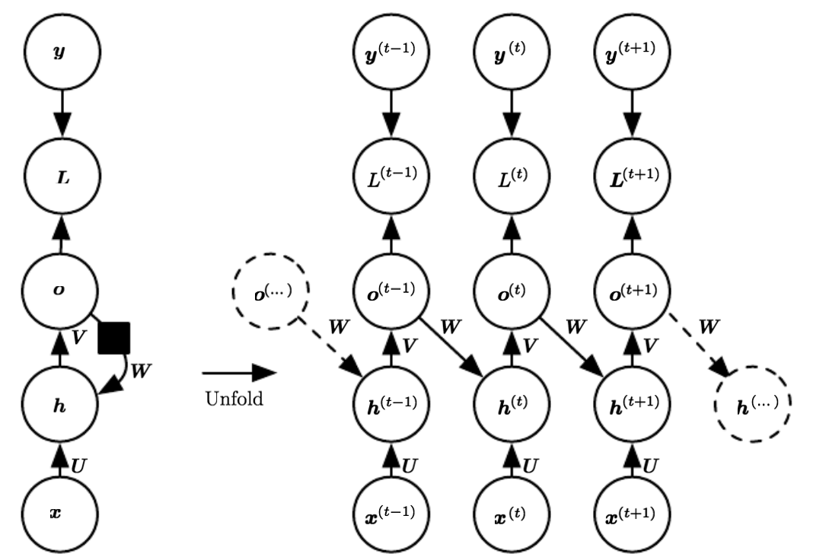

两周之后我将在组内做一个有关RNN的分享会，此处记下近几日入门RNN时的部分总结。本文仅介绍RNN的结构、梯度计算、常见的训练问题和解决方案。对于LSTM/GRU和近期火热的SRU的总结会在下一篇系列文章里给出。
RNN的结构
RNN(Recurrent Neural Network)也叫循环神经网络，是Sequence Model中非常著名的一种结构。传统的神经网络中，不同的输入$x_i$与$x_{i+1}$之间毫无关联，同理输出$y_i$与$y_{i+1}$间也是如此。这在现实生活中与时序相关的语料集中是非常不合理的。例如AI音乐生成过程中对时刻$t$音符的音调(C5 or Amaj7)的预测，与时刻$t$之前的全部历史音符息息相关。RNN被设计出的结构也正与"对时刻$t$的预测与$t$之前的全部信息有关"， 我将其形容为一种靠左的结构，即$t$时刻的预测与未来无关，相比之下word2vec则与过去未来均有关。
众多语言模型(Language Model)中另一个与RNN十分相似的是N-Grams模型，N-Grams也是靠左的一种结构。但N-Grams的缺陷非常明显：
- 并不能完全包含$t$时刻之前的全部序列信息{$x_0, x_1, ..., x_{t-1}$}。事实上之所以叫N-grams，就是因为仅截取了时序$t$之前的$N-1$个音符，即对条件概率做了如下近似：
$$P(w_1^n)=P(w_1)P(w_2|w_1)P(w_3|w_1^2)...P(w_n|w_1^{n-1})$$
$$=\prod_{k=1}^nP(X_k|X_1^{k-1})$$
$$\approx \prod_{k=1}^{n}P(w_k|w_{k-N+1}^{k-1})$$
而RNN则(理论上)包含此前的全部音符。
- 内存消耗随着N值增大迅速增加。$N$值越大则模型能"记住"的时序越多，效果也会更好(当然所需要的语料集也更多)。但同时要存储的grams也越多。一段包含$m$个音符的旋律，使用N-grams则需要存储$(m-N+1) \cdot N$个音符信息。
下图是RNN的折叠和展开后的结构：

如果我们将$x$视为一段旋律，$x_t$代表其中第$t$个音符(也可以说"时序$t$处的音符")，$o_t$是对时序$t$处音符的预测，$s_t$是神经网络中第$t$个隐含层，我们可以把它理解为"时序$t$处的记忆"，整个过程传导函数为：
$$s_t = tanh(Ux_t + Ws_{t-1})\tag{1}$$ $$o_t = softmax(Vs_t)\tag{2}$$
与传统神经网络每一层都有自己的参数不同的是，RNN中参数U、W、V被所有隐含层共享。参数共享带来的好处是，支持隐含层长度动态变化。我们且通过(1)(2)式各参数维度来解读这一点：
假设这段旋律长度为$T$，整个音阶(可以类比文本中的词典)包含56种声调，那么对每个音符$x_t$，其维度为$56 \times 1$。 定义隐含层的维度为100，则有：
$$x_t \in \mathbb{R}^{56} \quad U \in \mathbb{R}^{100 \times 56} \quad W \in \mathbb{R}^{100 \times 100} \quad s_t \in \mathbb{R}^{100} \quad V \in \mathbb{R}^{56 \times 100} \quad o_t \in \mathbb{R}^{100} $$ 所以共享参数U、W、V的维度与变长序列x的长度没有关系，这是共享参数能支持动态序列的原因。(请读者代入公式(1)(2)验证维度)
结合公式与结构图还可以看到，标准的RNN中信息主要通过隐含层$s_{t-1}$向$s_t$流动。Deep Learning书中还给出了另一种信息流动的方式:

与标准RNN信息流动不同的是，上图结构中信息是从$o_{t-1}$向$s_t$流动。它的好处是能加快并行计算：在计算前向传递时，直接将真实输出$y_{t-1}$作为$s_t$($h_t$与$s_t$同义，下同)的输入，这被称为teacher forcing。但它的效果不如标准RNN：相比$s_{t-1}$向$s_t$的输入，最终预测结果$o_{t-1}$向$s_t$的输入表征能力被弱化了。此外，标准RNN的能接受任意形式的输入和输出，但上图中RNN的输出$o_t$需用于信息传递，因此输出形式必定受到限制。
训练与梯度计算
根据我们以往学习神经网络的经验，其主要部分为：输入、输出、网络结构、前向传递函数、损失计算、信息反向传播。假如我们有音符长度各不相同的$N$段旋律，那么：
- 输入$x_t$：某段旋律的第$t$个音符
- 输出$o_t$：对输入$x_t$的下一个旋律的预测
- 网络结构：信息从隐含层$s_{t-1}$向$s_t$流动
- 前向传递函数：如公式(1)(2)所示
- 误差计算：假设第$n$段旋律长度为$T$，将$x_t$真实的下一个音符记为其正确输出$y_t$，即在本例中$y_t=x_{t+1}=prediction(x_t)$，则有：
第$n$段旋律的第$t$个音符误差$E_{n,t}$： $$E_{n,t}= -y_t log(o_t)\tag{3}$$
第$n$段旋律的整体误差$E_{n}$:
$$E_n= -\sum_{t=1}^{T}y_t log(o_t)\tag{4}$$
因此这$N$段旋律的总损失函数为：
$$E=\frac{1}{N}\sum_{i=1}^{N}E_i=-\frac{1}{N}\sum_{i=1}^{N}\sum_{t=1}^{T}y_t log(o_t)$$
BPTT
BPTT(Backpropagation through time)是为时间序列模型的Backpropagetion过程专起的一个别名，本质上无异。现在我们来计算各参数BP过程中的梯度，以共享参数V为例：
$$\frac{\partial{E}}{\partial{V}}=\sum_{i=1}^{N}\frac{\partial{E_i}}{\partial{V}}=\sum_{i=1}^{N}\sum_{t=1}^{T}\frac{\partial{E_{i,t}}}{\partial{V}}$$
其中$E_{i,t}$指第$i$段旋律的第$t$个音符，上式核心是计算$\frac{\partial{E_{i,t}}}{\partial{V}}$，为此我们简化符号，仅考虑某一段旋律，以$E_t$代表该段旋律第$t$个音符，则们结合公式(2)(3)可知： $$E_t= -y_t log(o_t)$$ $$=-y_t log(softmax(Vs_t))$$
此处将不赘述如何对$softmax$求导，详细可以看这里。 我们令： $$o_t^{'}=Vs_t\tag{5}$$ 根据softmax导数特性，有： $$\frac{\partial{E_t}}{\partial{o_{t}^{'}}} = o_t-y_t\tag{6}$$
因此: $$\frac{\partial{E_t}}{\partial{V}} = (o_t-y_t)*s_t\tag{7}$$
关于共享参数V的梯度计算已经解决，那么U和W呢？根据公式(1)(5)可知，我们首先需要计算$\frac{\partial{E_t}}{\partial{s_t}}$，然后再由$s_t$推导U和W，以W为例： 令(1)式中： $$z_t = Ux_t + Ws_{t-1}\tag{8}$$ 则有： $$\frac{\partial{E_t}}{\partial{W}} = \frac{\partial{E_t}}{\partial{s_t}}\frac{\partial{s_t}}{\partial{z_t}}\frac{\partial{z_t}}{\partial{W}}$$
相信根据公式(6)读者能很快解决$\frac{\partial{E_t}}{\partial{s_t}}$，而$\frac{\partial{s_t}}{\partial{z_t}}$仅仅是求$tanh$的导数而已，有： $$tanh^{'}{x}=1-tanh^{2}(x)$$
因此有： $$\frac{\partial{E_t}}{\partial{W}}=V*(o_t-y_t)\frac{\partial{s_t}}{\partial{z_t}}\frac{\partial{z_t}}{\partial{W}}$$ $$=V*(o_t-y_t)(1-s_{t}^{2})\frac{\partial{z_t}}{\partial{W}}$$
现在的重点是如何求$\frac{\partial{z_t}}{\partial{W}}$，也许根据公式(8)你的第一反应是"结果不就是$s_{t-1}$吗？"，但是请注意到: $$s_{t-1}=tanh(Ux_{t-1} + Ws_{t-2})$$
即$s_{t-1}$本身也以W为自变量。正确计算方式为： $$\frac{\partial{z_t}}{\partial{W}}=\sum_{k=0}^{t}\frac{\partial{z_t}}{\partial{z_k}}\frac{\partial{z_k}}{\partial{W}}\tag{9}$$
而其中： $$\frac{\partial{z_t}}{\partial{z_k}}=\prod_{j=k+1}^{t}\frac{\partial{z_j}}{\partial{z_{j-1}}}\tag{10}$$
公式(9)(10)揭示了RNN的2个非常严重的问题：
- 根据公式(9)可知，对第$t$个音符的W参数梯度计算将等待前$t-1$个音符的梯度计算完成，这很显然不利于并行计算，后续我会在介绍近期提出的模型SRU在针对此问题的改进方案。总体来说，RNN之所以比CNN训练更慢，本质原因就在于序列梯度计算的依赖性。
- 根据公式(9)(10)可以看到，计算$\frac{\partial{z_t}}{\partial{W}}$涉及到求连乘(10)，当序列很长且$\frac{\partial{z_j}}{\partial{z_{j-1}}}$均小于1时，$\frac{\partial{z_t}}{\partial{W}}$结果很容易趋近于0。反过来如果$\frac{\partial{z_j}}{\partial{z_{j-1}}}$均大于1时，$\frac{\partial{z_t}}{\partial{W}}$结果则可能无穷大。前者会让信息传递在几个音符之后"消失"，从而使得$x_t$的信息借由梯度传递到$N$个音符前的$x_{t-N+1}$处时，其值已接近于0，这被称之为梯度消失(vanishing gradient)，后者会让梯度值无穷大而无法计算，被称为梯度爆炸(exploding gradient)。
梯度消失和梯度爆炸在普通的神经网络中也会发生，这是由于BP反馈求导的连乘性质，cs231n提供了一个简单的梯度消失example，也许你看完能有更深刻的体会。
vanilla RNN：问题与解决
如上文所说，vanilla RNN一方面因为时间序列的依赖性导致训练时间长，另一方面则因梯度消失和梯度爆炸而使训练过程阻碍重重。
梯度爆炸很容易在实际训练中观测到：计算的损失变为"NaN"。它的解决方案一般有如下两种：
- 梯度修剪(gradient clipping)。例如当梯度计算结果在[-100, 100]以外时，“修剪”为-100或100。这个方法很粗暴但有效。
- 退回到之前的某个梯度值。具体来说就是为梯度
(未完)